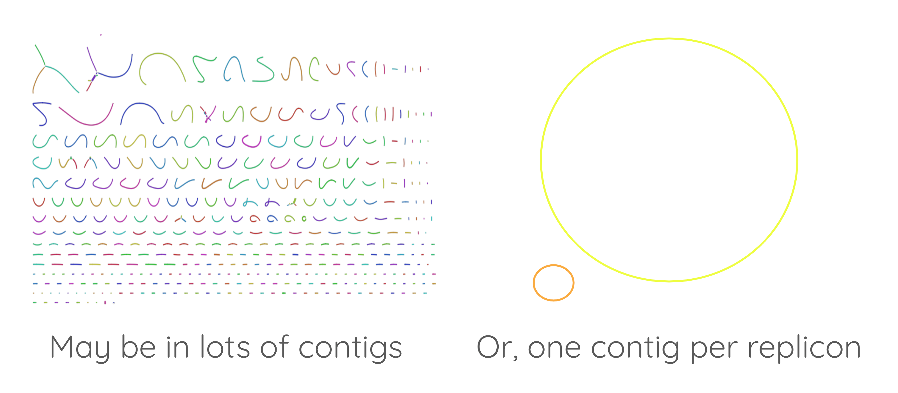

Genome annotation with Prokka
Contributors
Questions
How to annotate a bacterial genome?
How to visualize annoted genomic features?
Objectives
Load genome into Galaxy
Annotate genome with Prokka
View annotations in JBrowse
Overview
-
What is genome annotation?
-
Tools for genome annotation
-
The tool “Prokka”
Speaker Notes
- In these slides, we will learn what is genome annotation, and which tools can be used for genome annotation.
- We will describe in detail a tool called Prokka.
What is Annotation?
-
Classifying and describing parts of the genome sequence
-
Annotations are biological or other features on a genome, e.g.
-
a ribosome binding site: a biological feature
-
a sequence of TTTTTT: may/may not be biological but could be interesting
-
-
We can name features by type and location, e.g. gene, pseudogene, repeat
-
We can hypothesise functions, e.g. antioxidant activity
Speaker Notes
- Annotating a genome means positioning features along the sequence of a genome.
- Those features can be anything one can find in a genome sequence: genes, but also binding sites for example.
- When a feature, like a gene for example, is positioned, you can add information about its function.
- This operation is named “functional annotation”.
First: assemble the genome

Speaker Notes
- Before annotating a genome, you need to assemble it.
- If you get a high quality assembly, it will be easier to perform a good quality annotation.
Then: annotate

Speaker Notes
- Once you have a good genome sequence, you can annotate it.
- In this example, there a gene coding for a delta toxin.
- There is a ribosome binding site in red, and the coding sequence of this gene is in green.
Annotation
Speaker Notes
- For each feature annotated on a genome, you can get its position, its type, and some information about its function or how it is expressed.
How do we annotate? many different ways:
-
sequence: does it match known sequences in databases?
-
sequence structure: e.g. does it look like an exon (start and stop codons)?
-
use other data: e.g. do lab experiments to investigate biological function
Speaker Notes
- You can annotate features by looking at similarities with known sequences from international databases.
- Some tools annotate features on a genome by seeking motifs corresponding to known structure (for example gene or exon start or stop).
- Some lab experiments can help annotate specific regions of a genome, even though it is often much more expensive than an automatic annotation.
- The lab experiments can provide certainty about function, where automatic annotation is more of a guess.
Prokka
Speaker Notes
- Prokka is a pipeline that runs several other tools to annotate prokaryotic genomes.
- The input is the assembly of the genome in Fasta format.
- Prokka runs Aragorn to annotate transfer RNAs.
- Ribosomal RNAs are annotated with RNAmmer.
- Infernal uses the Rfam database to annotate non coding RNAs.
- Finally Prodigal annotated coding genes.
- Each coding sequence is then compared to the SwissProt sequence database using Blast, and to TIGR and Pfam motif datases using Hmmer3.
- SignalP is also run to detect signal peptides in each predicted coding sequence.
- The final result of the whole Prokka pipeline is a set of GFF3, GBK ans ASN1 files.
More information
Galaxy Training Network Slides: Introduction to Genome Annotation
Speaker Notes
- More information is available in the “Introduction to Genome Annotation” slides.
Key Points
- Prokka is a useful tool to annotate a bacterial genome.
- JBrowse can be used to inspect the annotation of a genome.
Thank you!
This material is the result of a collaborative work. Thanks to the Galaxy Training Network and all the contributors! Tutorial Content is licensed under
Creative Commons Attribution 4.0 International License.
Tutorial Content is licensed under
Creative Commons Attribution 4.0 International License.